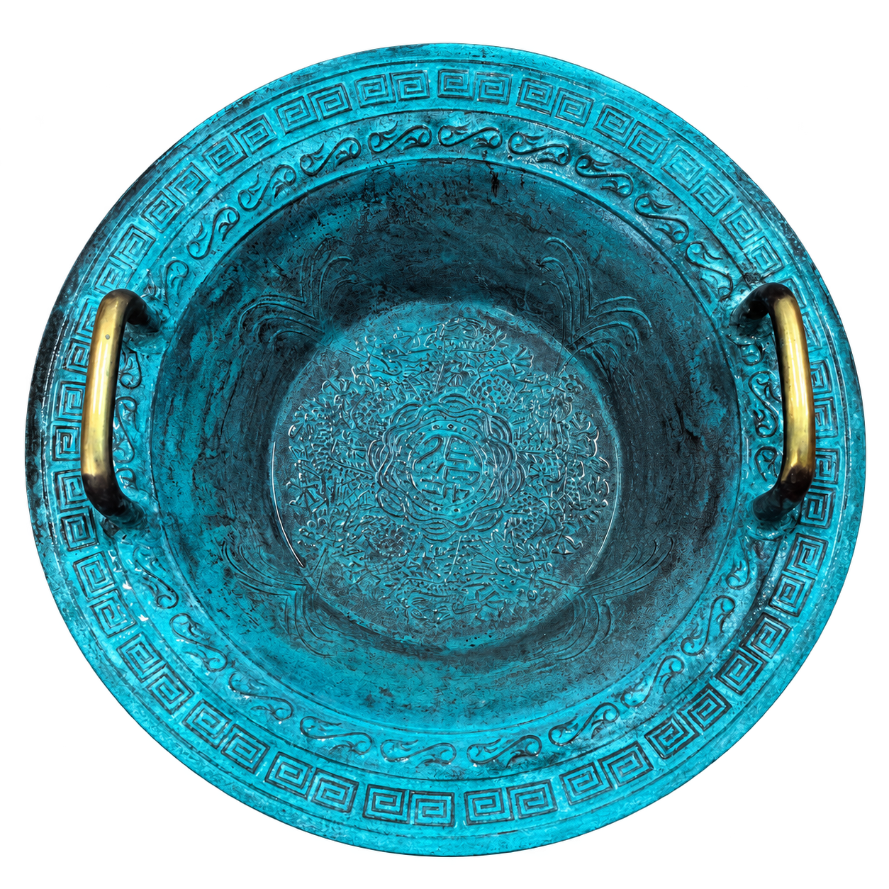

What draws me to physics is the quiet order beneath its equations: the way mathematical structures can gather disparate phenomena into a coherent picture. My path began with programming and robotics, but Mathematical Methods in Physics and the compact elegance of Dirac notation gradually led me toward mathematical physics and quantum computation. I remain curious about emerging directions in engineering and technology, as well as the ways philosophy and education shape how we ask questions and learn.
Education
Qingdao University
B.Sc. in Physics
– Present
Relevant coursework: General Physics, Mathematical Methods in Physics, Theoretical Mechanics, Electrodynamics, Quantum Mechanics, Thermodynamics and Statistical Physics, General Physics Laboratory, and Modern Physics Laboratory.
Internship Experience
TAL Education Group
Teaching and Curriculum Research, Think Academy
Mathematics Competition Programs for Overseas Upper-Elementary Students
Shenzhen Institute for Advanced Study, University of Electronic Science and Technology of China
Research Intern, under the supervision of Professor
Gang Liu
Research on LLM inference acceleration using GPU–PIM architectures.
– Present
Research
Research Interests
My first paper grew from an interest in mathematics and physics education. My interests now center on mathematical structures in quantum physics, quantum computation, quantum machine learning, and the formalization of theoretical physics. I also explore classical computing architectures, quantum algorithms, and the feasibility and strengths of quantum platforms based on trapped ions, superconducting circuits, and neutral atoms.
Research Projects and Publications
Dragon Washbasin Experiment
Li Zhuoran, Cao Derang, Kong Xinyi, Li Qiang, Sun Shijia. Physical Analysis and Instructional Design of the Dragon Washbasin Experiment from the Perspective of High-School–University Transition. 物理实验, under review.

Experiment
Schematic · slow motion
I study basin vibrations, turning measurements and theoretical models into physics teaching.
Observe → Measure → Model → Teach
Deeper or denser → slower
LLM-PTP
Large language model inference acceleration with processing-in-memory (PIM) architectures.
ActiveA → B1
ShadowA → B3
Bank 0Bank 1Bank 2Bank 3
ATU maps logical requests to banks without GPU-side layout changes.
Contributions to Physlib
Physlib is an open-source community project for formalizing results from physics in Lean 4. If you are interested in this work or related topics, please feel free to contact me on the Lean Zulip.
Formalized the Clifford action on Dirac fermions as a real-linear map to complex-linear endomorphisms, together with the associated gamma-matrix identities, chirality operator, and chiral projectors.
Lifted quantum angular momentum components from Schwartz maps to densely defined symmetric operators on Hilbert space. Future work will extend this toward L2, self-adjointness, spectral results, ladder operators, and spherical harmonics.
Extended the quantum angular momentum API with the Hilbert-space L2 operator, three-dimensional angular momentum components and commutation relations, and raising and lowering operators on the common Schwartz domain.
More
Outside academia, I enjoy strategy games, particularly Teamfight Tactics (TFT). I also enjoy watching Detective Conan.